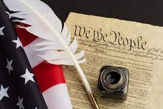

Why American History should be taught in Middle schools
Life is divided into three terms - that which was, which is, and which will be. Let us learn from the past to profit by the present, and from the present, to live better in the future.
William Wordsworth
The problem
Did you know that it is a requirment in 31 states to teach a child American History to graduate, yet those other states and even more so in middle schools, American History is not only not required, but it is not taught at all. In the states that have schools that teach American history,people are taught a very minimum amount.Some don't even teach past the Revolutionary War!
Why it is a problem
If students are not learning about the past,how could they use that information in the future, when it is of upmost importance?
It was found in a study that only 1 in 3 Americans could pass the citizenship test and that only 26% of Americans could name all three branches of goverment, according to the James G. Martin Center for Academic Renewal.
What we can change
This is a very easy problem to solve, teach clean, truthful American history from 3rd grade to 12th grade and beyond. To conclude, this is a very bad problem that threatens the US today and it has a very easy fix.
 Go to the home page